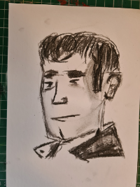
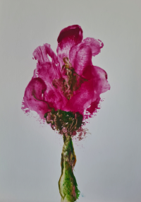
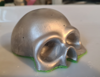

Software/ Web Development

Art

Deaf
Welcome to my personal website. I'm a software developer, artist, and advocate for the deaf community. This is a simple showcase of my work and interests. I will continue to update this site with my latest projects and thoughts.
Software/ Web Development
Art
Deaf
For over 20 years, I've worked with various programming languages and frameworks to build web applications. I've worked in both frontend and backend development, and I'm experienced with modern development practices and tools. I often work with javascript, java, and Scala.
I'm an amateur artist with a passion for creating unique artwork. I use a range of mediums and tools. I usually work with acrylics, watercolours, and moulds. One of my challenges is capturing details of people's faces
My artwork is inspired by nature and the human condition. I do not use AI art in any ofmy work.

Description Charcoal Drawing of a man with a 1950s hairstyle and wearing a leather jacket. Not based on any one specific person.

Description Flower Painting. I was using a range of palette knives practising applying the paint

Description Skull Mould, painted silver with green felt for the underside. I didn't use the right measure of eco cast powder and water. It didn't fill the mould properly. This was a happy accident.
Near Glasgow,I was born profoundly deaf and was written off by doctors that I was never speak or read. I can speak and know a little sign language. I advocate for the deaf community, promote accessibility, and mental health awareness. I love hearing Scottish patter.